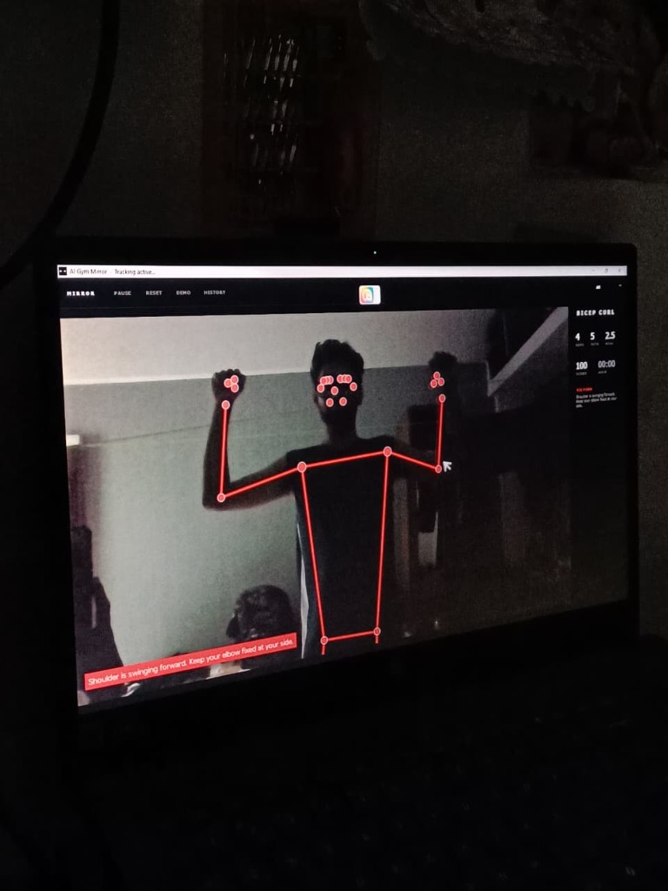
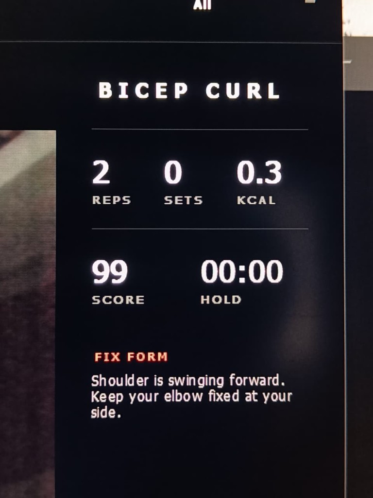
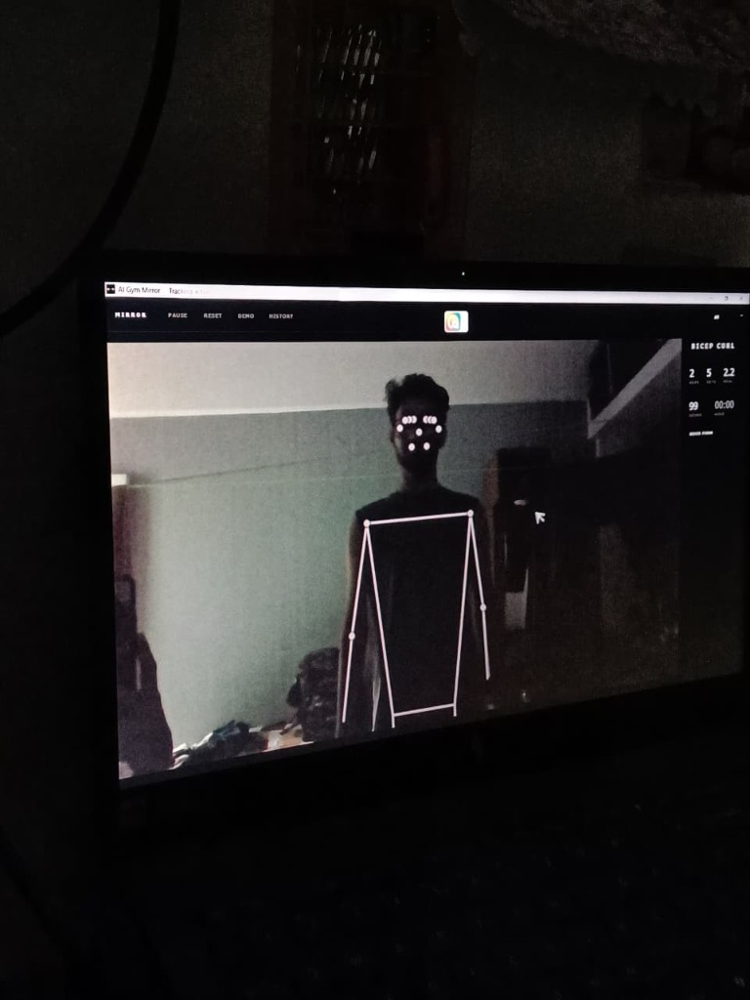
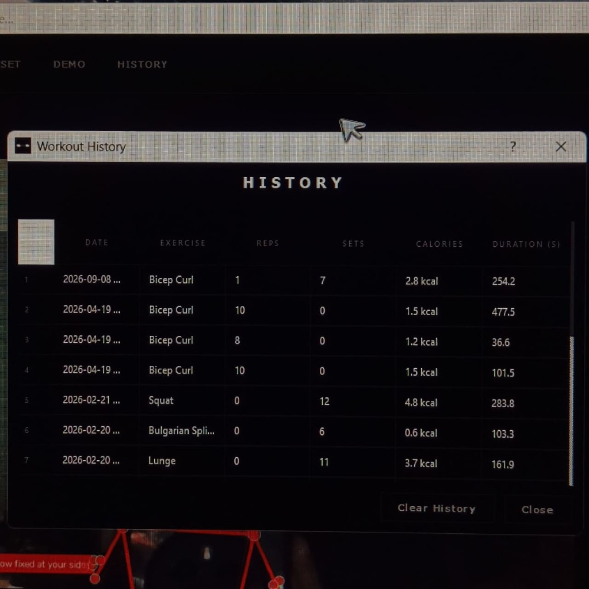
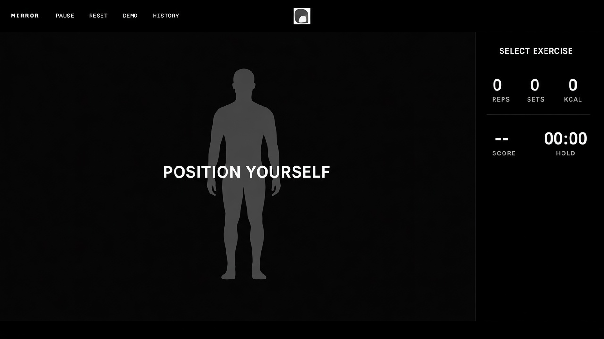
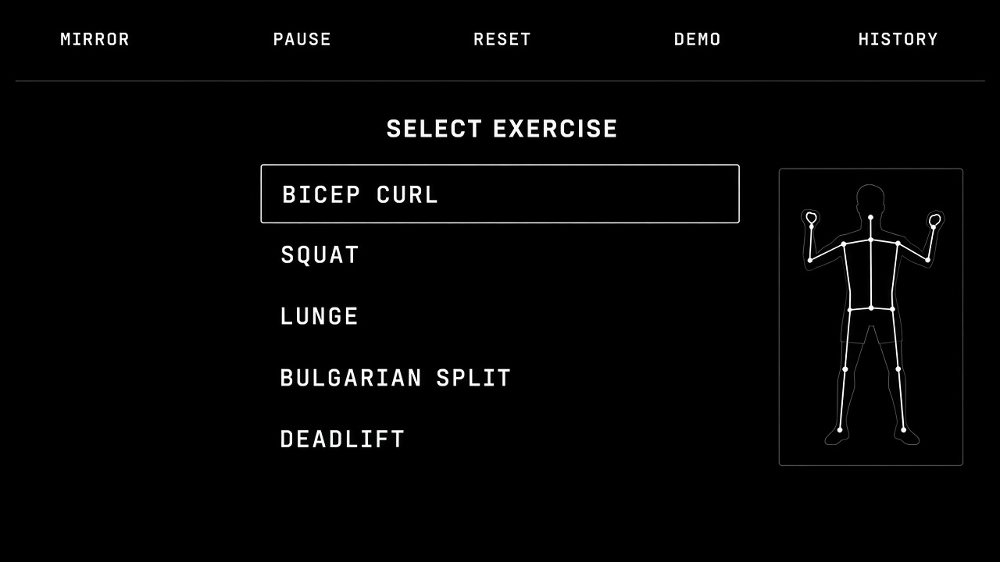
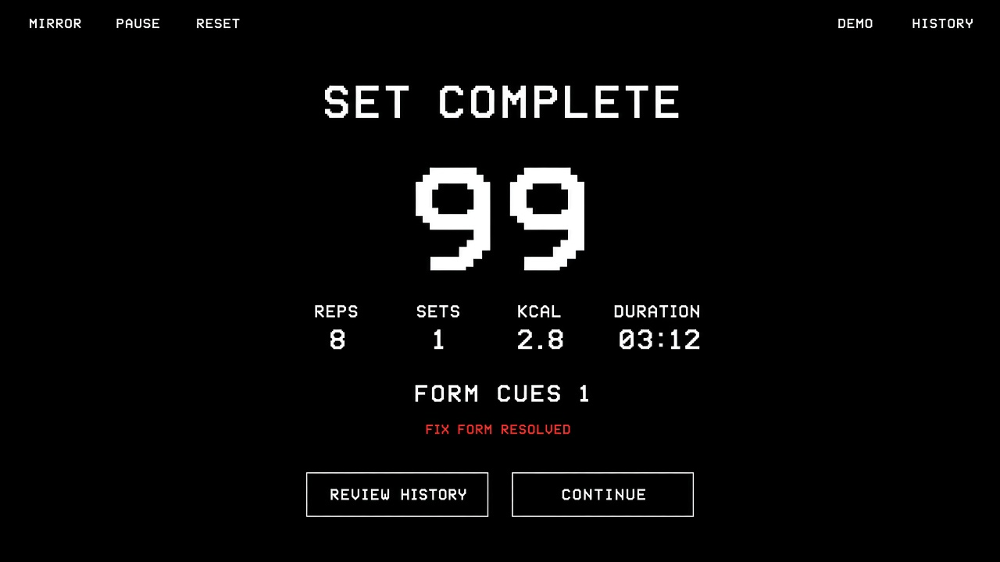

01
In the rep
Correction only works during the movement — in the same tempo as the exercise.
2026 · AI
Feedback in the movement — not after the set.

Problem
Mistakes stay invisible until they become pain. If feedback arrives, it arrives too late.
How might we give useful workout feedback without a trainer in the room?
Insight
01
Correction only works during the movement — in the same tempo as the exercise.
02
Too much data breaks flow. The system should speak in glances.
03
The overlay recedes the moment form is correct. Absence is a state.
Product






Notes
The decision was not what to show, but when.
Correct form needed a designed silence — not a green check.
Camera, light, and distance are the interface.
Next
VR Shipsmith